Multi-camera and single-camera podcast editing · iPhone, iPad and Mac
Pocket Podcast listens for who's talking and cuts between your cameras on its own — one camera per guest, or a single wide shot it splits into one crop per person. Colour, trim, a transcript, social clips and the YouTube description come out of the same run.
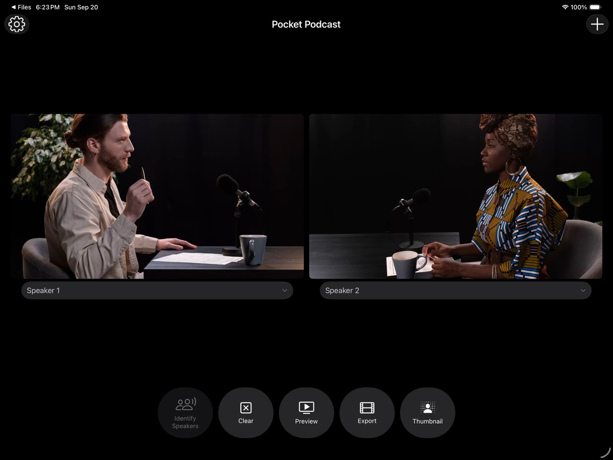
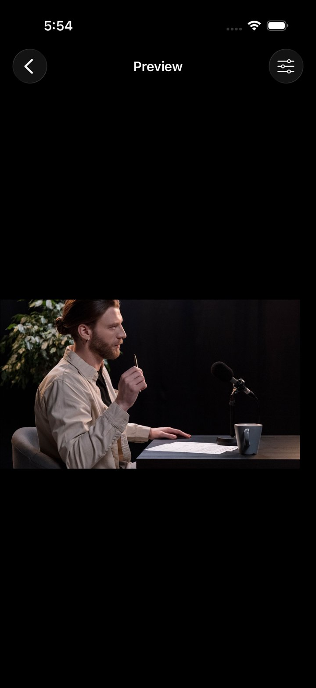
How it works
Each step is one button. The app never asks you to scrub a timeline.
Import
Bring in a file per camera from your Camera Roll or Files, or record straight into the app — two cameras, three, a whole panel. With a single camera, Pocket Podcast finds the faces and splits the frame into one crop per person, so a one-camera setup still cuts like several.
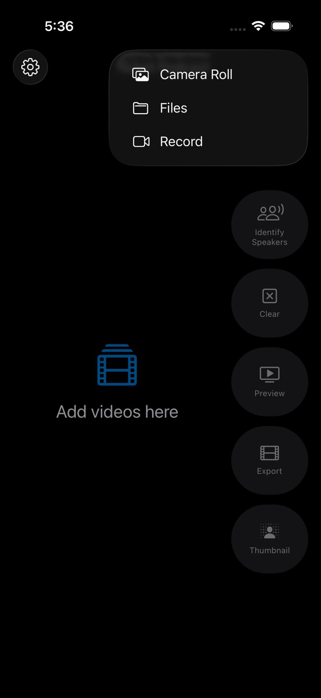
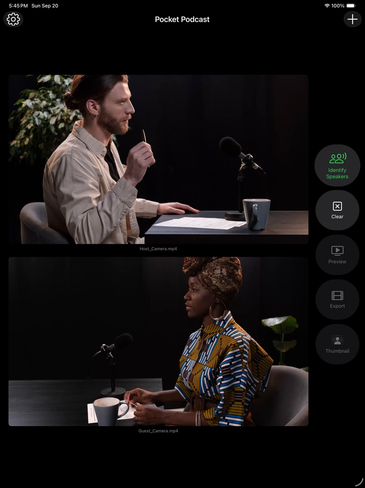
Identify speakers
Speaker identification runs on the device with no upload. Turn on ElevenLabs Scribe instead and you also get a word-level transcript with every turn timed — the app asks before it spends your credit.
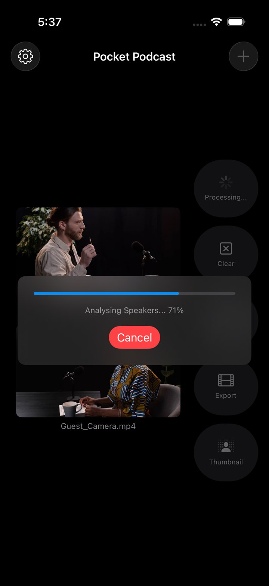
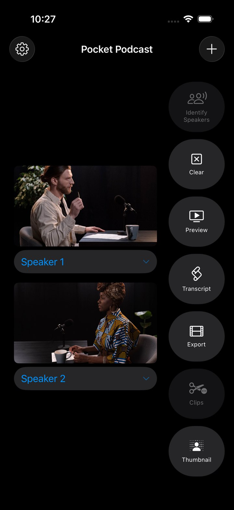
Assign
One tap per camera, and a camera can carry more than one person. When each camera has exactly one, the app assigns them for you. From here the edit is decided: the shot follows whoever is speaking, with reaction cutaways on long turns.
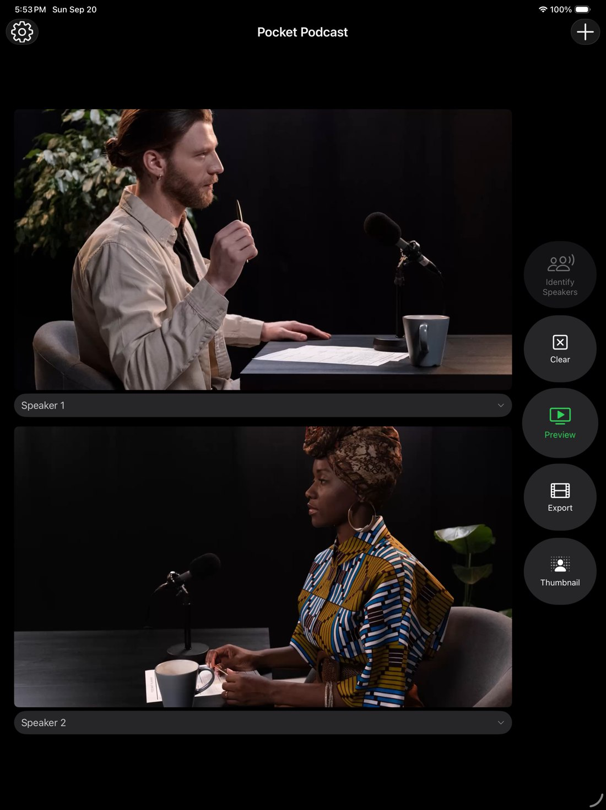
Preview and polish
Watch the cut before you commit. Grade the picture with levels and a live histogram — or press Auto Levels once — trim the ends, and switch on noise reduction. Loudness normalization to −16 LUFS is a toggle in Settings.
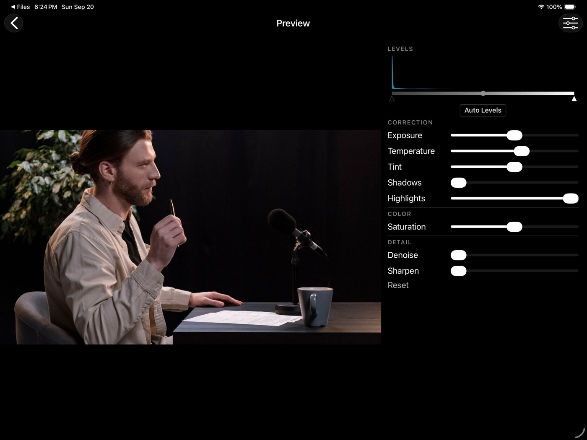
Trim
The filmstrip shows the cut, not the source, so you trim what the audience will see. Everything downstream — the transcript, the clips — follows the trimmed timeline.
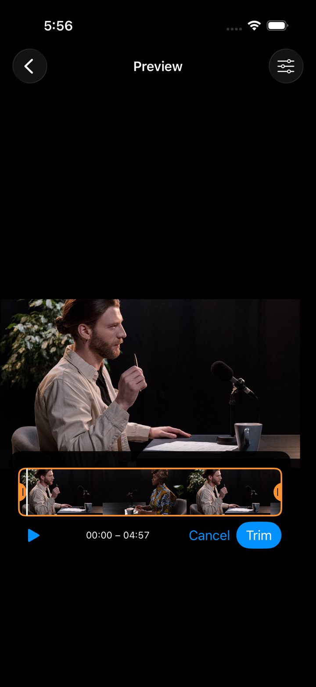
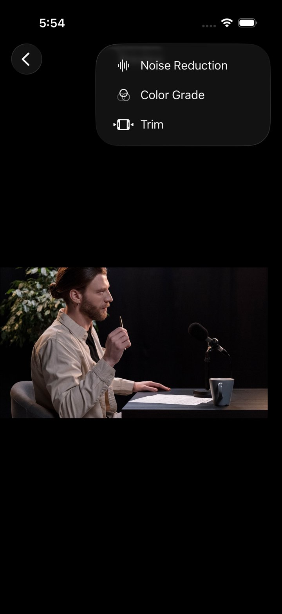
Export
The name you give the export becomes a folder. The video, its transcript, the thumbnail, the clips and the metadata all land there — one place to hand to whoever publishes.
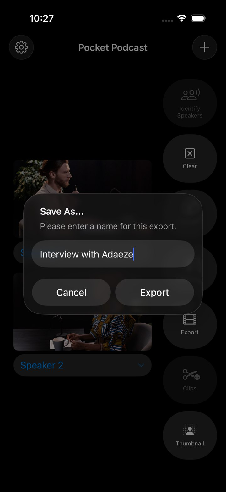
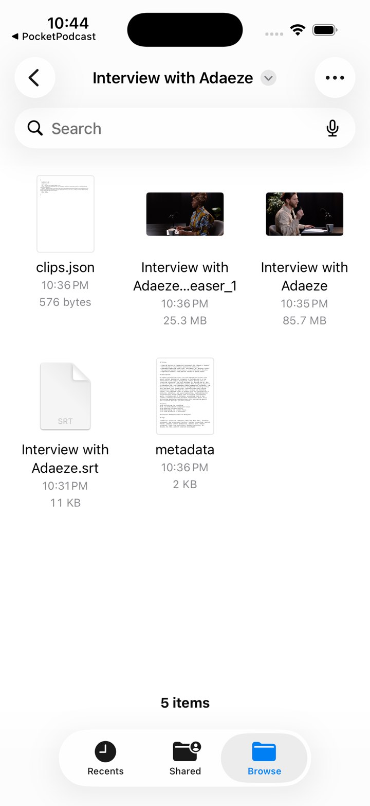
Transcript
Name the speakers once and the whole transcript updates. Export it as SRT, WebVTT or plain text; the SRT is also written next to the video automatically.
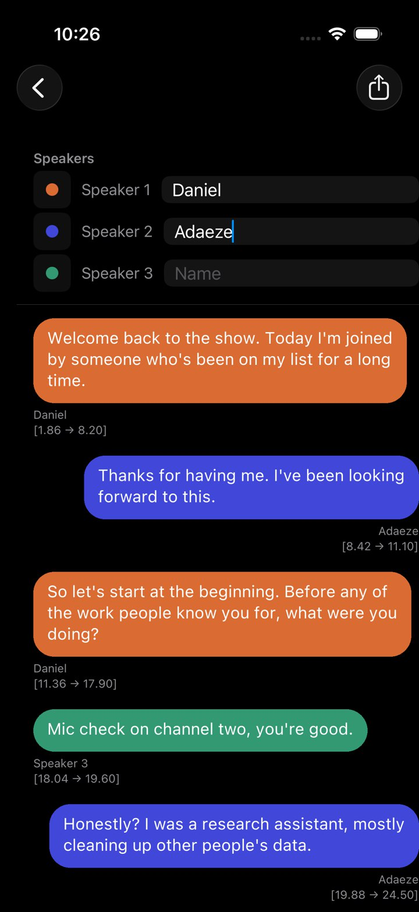
Clips and metadata
Press Clips and the transcript goes to Claude Sonnet 5 through OpenRouter, with your key. It nominates moments; the app checks every one against the transcript, snaps the edges to words, and cuts them from the export. A second call writes the YouTube copy.
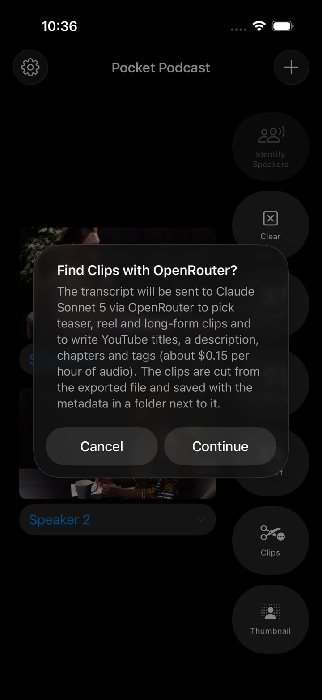
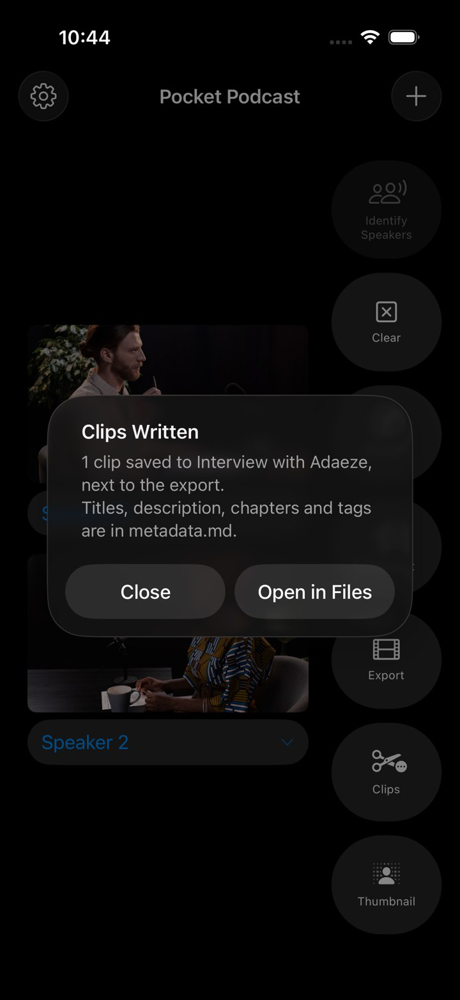
Daniel sits down with Adaeze to trace the years before the work she's known for — a research job spent tidying other people's data, and the pattern she kept running into until it became the thing she had to build. A conversation about noticing, patience and starting late.
founder story, research, career change, product design, podcast interview, starting late
Example output. Titles ≤ 100 characters; chapters start at 0:00 and are at least 10 s apart, as YouTube requires.
Under the hood
A CoreML diarization model runs locally. No account, no upload, no waiting on a queue.
Word-level timing and speaker labels for the full transcript, clips and chapters. One upload of the merged audio per episode.
Faces are found in the frame and each speaker gets their own eyeline-aligned crop, so a one-camera setup cuts like a multi-camera one.
Auto Levels reads the untouched frame, so pressing it twice gives the same answer. Grade, trim and noise reduction combine without surprises.
Optional noise reduction on the mix and normalization to a target LUFS on export.
A composite of the speakers from the cut, written into the episode folder.
PodMerge for Mac
PodMerge is the desktop version. Drop the camera files onto the window, identify speakers, and preview and transcript open in their own windows so you can keep both up. Export goes through the standard save panel and opens in QuickTime when it's done; the clips and metadata land in a folder beside the file.
Your keys, your account
Speaker identification and the whole edit run on the device. If you want a transcript, clips and metadata, paste your own ElevenLabs and OpenRouter keys in Settings. They're stored in the Keychain, hidden in the fields, and sent only to those two services.
Every request to OpenRouter is sent with data collection denied, whatever the account's defaults.
Clips + metadata ≈ $0.15 per hour of audio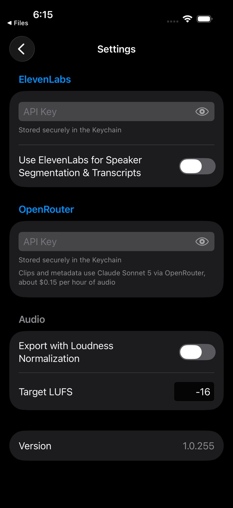